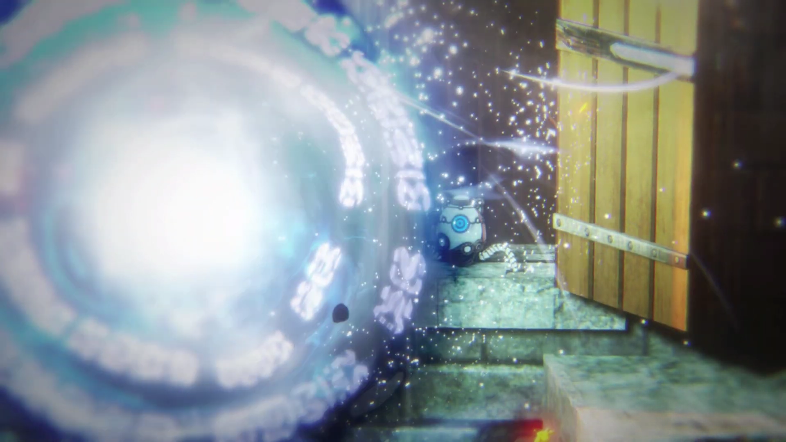

The Legend of Zelda Timeline Other Info
The Three Timelines
What's in the Three Timelines
In the adult timeline there is no hero because he got sent back in time. Him being sent back in time didn’t erase the timeline, the timeline continued on with no hero to reincarnate. Eventually, Ganon breaks free from his seal and there is no hero to stop him. The goddesses intervene by flooding Hyrule, sealing him once again but, as a consequence, Hyrule is now a huge ocean. This leads to the events in Wind Waker were a regular kid named Link, not a reincarnation of the hero, sets out on a journey to rescue his sister and he becomes a hero. Phantom Hourglass takes place right after Wind Waker and Spirit Tracks is 100 years later. The child timeline starts off with Majora’s Mask where, at the beginning of the game, Link is on his search for his fairy companion, Navi. The other two games in this timeline are Twilight Princess then Four Swords Adventures. In the timeline where the hero was defeated there are quite a few games. It starts of with A Link to the Past, then Oracle of Ages/Seasons, and then Link’s Awakening. The last two in this timeline are The Legend of Zelda and The Adventure of Link.
Games in Each Timeline:
- The Defeated Hero Timeline
- ------A Link to the Past, Oracle of Ages/Seasons, Link’s Awakening, The Legend of Zelda, and The Adventure of Link
- The Triumpant Hero Timelines
- --Child Timeline
- ------Majora's Mask, Twilight Princess, and Four Swords Adventures
- --Adult Timeline
- ------Wind Waker, Phantom Hourglass, and Spirit Tracks
Other Games
Games not on the Hyrule Historia Timeline
Now there are also the games that aren’t on the official timeline in the Hyrule Historia book. I’d like to mention a few. It is speculated that Breath of the Wild doesn’t fall at the end of one timeline, but all three of them. Also, there is an alternate timeline for Breath of the Wild in Hyrule Warriors: Age of Calamity, created by a guardian opening a time portal and traveling back in time, leading to Calamity Ganon being defeated when it first appeared. Tears of the Kingdom takes place after Breath of the Wild. Back in the defeated hero timeline A Link Between Worlds should take place after Oracle of Seasons/Ages but before The Legend of Zelda. The reason for that is a series of paintings describing what seems to be previous events. I also would like to mention Hyrule Warriors which seems like the Avengers: Endgame of Legend of Zelda, there is a lot of crossovers in this one. I’m not sure where it’d be on the timeline but it seems like a cool crossover game! Seriously, check out this trailer!
